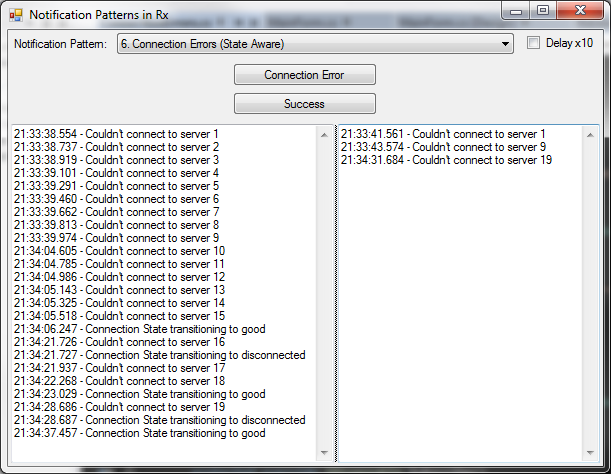

The last Notification Pattern I’ll cover in this series of posts is how to handle connection error notifications. Connection errors are different than other kinds of errors. They aren’t really bugs; they’re just shit that happens. Your program can’t really control it. The best your program can do is just to handle the error gracefully.
I can’t speak to much about “handling gracefully” as depends on the context of your program. If it is a front end user interface perhaps a Retry/Cancel message box will do the trick. If it’s a background service then its probably best just to go to sleep and try again a few minutes later.
Furthermore, the finicky thing about connections errors is they can be intermittent. They can correct themselves over a short period of time. If administrators routinely takes down a service temporarily to do regular maintenance this intermittent connection error may be just part of normal operation.
This post is about how to handle the notification of an intermittent error. Sure, we could apply the same notification pattern we used for unexpected errors. But if the system comes back online, by the time someone responds to the notification they will only find their self on a wild goose chase. Do this too often and you are training people to ignore your notifications, and that is not what you want.
The behaviour we want out of this pattern is when a connection error occurs we should queue up a notification to be delivered at some point in the near future. When it comes time to actually deliver the notification we check if the connection has been restored. If the connection has been restored we cancel the notification.

The example program has two buttons: one to indicate a connection error occurred, and another to that indicates the connection is good.
When the first connection error occurs we get a notification of it 3 seconds later. We have a burst of 9 errors and due the anti-spam rule we implemented in the previous example only the first and ninth errors are reported.
Then we get another burst of connection errors (#10 through 15). However in this example shortly after error #15 we click the Success button and no notifications are sent. This pattern is repeated again with errors 16 through 18.
Finally we repeat the first example of raising error #19 without a transition back to a good connection state. Error #19 is notified on three seconds later.
In order to implement this pattern we are going to have to handle state. This Connections State will be stored in a simple Boolean property. For demonstration purposes, I’ve added a bit of logging when the state changes.
private bool _isConnected;
private bool IsConnected
{
get { return _isConnected; }
set
{
if (_isConnected == value) return;
_isConnected = value;
OnRawMessage("Connection State transitioning to "
+ (value ? "good" : "disconnected"));
}
}
The Connection Error button pushes an error onto an IObservable exception event stream, just like in our previous examples. The Success button doesn’t do anything with the stream; it just sets IsConnected to true.
Here is the subscription code:
return _exceptionStream
.Do(OnRawMessage)
.Do(ex => IsConnected = false)
.Delay(TimeSpanFactory.FromSeconds(3))
.SampleResponsive(TimeSpanFactory.FromSeconds(2))
.Where(ex => !IsConnected)
.ObserveOn(this)
.Subscribe(OnNotificationMessage);
The subscription function chain has the same elements from the previous examples. It starts by writing the raw message to the TextBox on the left. It ends by returning to (ObserveOn) the UI thread and writing the notification message to the TextBox on the right.
Disregarding this standard template, the first thing we do is call the Do method and transition the current state to disconnected.
Then we need to “queue” the notifications to be delivered later. We introduce this delay with the Rx Delay method (obviously).
The Delay method doesn’t do anything to aggregate a burst of error messages. Therefore we steal from our previous example the SampleResponsive method to discard some of the exceptions. This is my go-to anti-spam function.
The last thing we do in the function chain (template cruft aside) is to simply use the Where method to check if the connection state is still disconnected. This Where function will be executed 3 to 5 seconds after the original call to the Do method. That’s how long we allow for the flaky connection to restore itself. If the connection has restored the Where function removes the exception from the stream, thereby cancelling the notification.
This ends my five part series on Notification Patterns. I find that most notifications I need to send in the real world will be a variation on these three Notification Patterns. Again, they are: Lossless Notifications (Buffer), Unexpected Errors (SampleResponsive and GroupBy), and Connection Errors (Delay and state). Also check out the Introduction to Rx (additional resource links) and Creating a Stream (Subject). With these tips, hopefully implementing a good email delivery system won’t make you “go postal”.